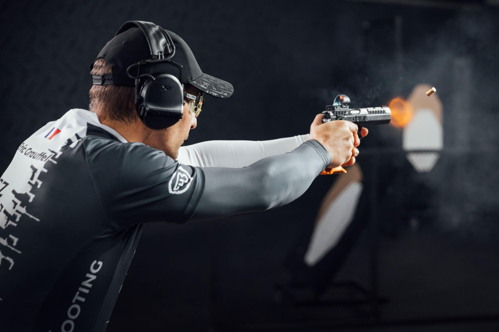

GLIWICE · STRZELECTWO SPORTOWE
Skupienie.
Precyzja.
Społeczność.
Dobry trening zaczyna się od dobrego miejsca.
Poznaj Gliwicki Klub Strzelecki.
Sprawdź zasady dołączenia ↗
01 / NASZ KLUB
Wspólna pasja. Własna droga.Znajdź swoje
miejsce na osi.
Liczy się skupienie na celu.
I ludzie, z którymi do niego dążysz.
W Gliwickim Klubie Strzeleckim łączymy regularne treningi ze sportową rywalizacją. Na miejscu czekają kryte osie, broń klubowa i opieka instruktorska.
Zaczynasz?
Poznaj warunki członkostwa i porozmawiaj z klubem o swoim pierwszym treningu.
Masz już doświadczenie?
Rozwijaj umiejętności, trenuj regularnie i weź udział w klubowej rywalizacji.
02 / STRZELNICA
Przestrzeń do regularnego treninguTwój trening.
Twoje tempo.
Dwie kryte osie w Gliwicach. Zaplecze, które pozwala skupić się na tym, co najważniejsze.
Sprawdź dojazd ↗Broń klubowa
Dostępna dla członków klubu.
Opieka instruktorska
Wsparcie podczas treningów.
Zaplecze treningowe
Tarcze i tarczociągi.
03 / CZŁONKOSTWO
Zrób pierwszy krokDołącz do
naszego grona.
Przed zgłoszeniem zapoznaj się z zasadami klubu. Warunki podane w aktualnej ofercie to ukończone 21 lat, niekaralność i deklaracja członkowska.
Poznaj warunki
Sprawdź opłaty i zakres świadczeń.
Skontaktuj się z klubem
Uzgodnij szczegóły pierwszej wizyty i zgłoszenia.
Ustal dalsze kroki
Klub wyjaśni formalności i zasady rozpoczęcia treningów.
CZŁONKOSTWO W GKS
lub 100 zł / miesiąc
Wpisowe jednorazowe 300 zł
W ramach składki
- Kryte osie 25 m i 50 m
- Broń klubowa i opieka instruktorska
- Stanowiska, tarcze i tarczociągi
Amunicja płatna dodatkowo według zużycia.
Porozmawiaj z klubem ↗04 / ZAWODY I SPOŁECZNOŚĆ
Spotkajmy się na stanowiskuSprawdź siebie.
Poczuj sport.
Gliwicki Turniej Strzelecki
Klub organizuje turniej strzelecki oraz spotkania integracyjne. Aktualne komunikaty, terminy i informacje o zapisach sprawdzisz w klubowym kanale.
Aktualności i terminy ↗Metryczka na zawody
Wpisz dane zawodnika raz, przygotuj od 1 do 4 metryczek i pobierz PDF lub wydrukuj gotowe formularze.
Wypełnij metryczkęAplikacja otworzy się w nowej karcie. Wypełnienie metryczki nie jest zgłoszeniem na zawody.
WARTO WIEDZIEĆ
Przed pierwszą
wizytą.
Czy mogę przyjść na jednorazowe strzelanie?+
GKS nie prowadzi indywidualnych strzelań komercyjnych. Dostęp do strzelnicy i broni mają członkowie klubu oraz grupy zorganizowane po wcześniejszym uzgodnieniu.
Czy muszę mieć własną broń?+
Klub udostępnia członkom broń klubową. Amunicja jest rozliczana dodatkowo według zużycia.
Kiedy odbywają się treningi?+
Według obecnej strony klubu: we wtorki, środy i czwartki w godzinach 18:00–21:00. Przed pierwszą wizytą skontaktuj się z klubem.
Jak umówić grupę zorganizowaną?+
Skontaktuj się bezpośrednio z klubem przez jego profil na Facebooku, aby uzgodnić możliwość wizyty i warunki.
05 / KONTAKT